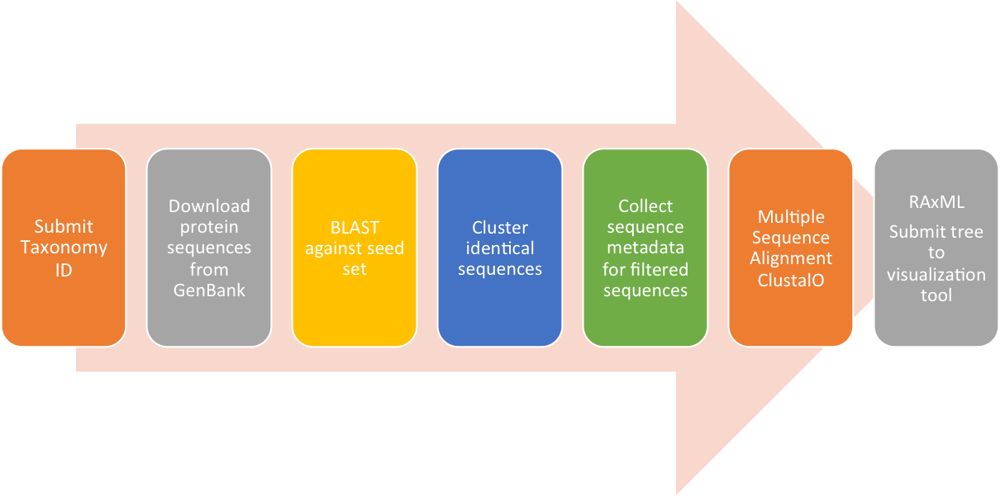

A Virus Taxonomy Classification Framework
ViCTree is a bioinformatics framework that automatically selects new candidate virus sequences from GenBank, generates multiple sequence alignments, calculates a maximum likelihood phylogeny, and is capable of automatically building new phylogenies when new data is available on GenBank.
ViCTree analysis workflow:
Initially, all known protein sequences available in GenBank are downloaded, avoiding filtering based on GenBank annotations. BLAST is then used to compare these sequences with a seed set consisting of a curated set of sequences spanning the known diversity of the family. Significant matches are extracted based on the e-value and a pre-defined length parameter, followed by multiple sequence alignment and RAxML maximum likelihood tree generation. These data can be updated when new sequences are available in GenBank and all versions of the tree and alignments are retained for future reference using version control. The latest version of the tree is submitted to an interactive online tree visualisation tool, which combines the tree with pairwise distance data and enables the user to employ filtering based on defined distance cut-off values. The pipeline is currently set up for the Herpesviridae and Parvoviridae families but is flexible and can be adapted for any virus family.
If you are using ViCTree, we would be grateful if you could cite the following reference:
Sejal Modha, Anil S Thanki, Susan F Cotmore, Andrew J Davison, Joseph Hughes; ViCTree: an automated framework for taxonomic classification from protein sequences. Bioinformatics, bty099, https://doi.org/10.1093/bioinformatics/bty099
A tutorial explaining the installation of the framework is available.
ViCTree framework is developed by :
Sejal Modha (@sejmodha), Anil Thanki (@anilthanki) and Joseph Hughes (@josephhughes).